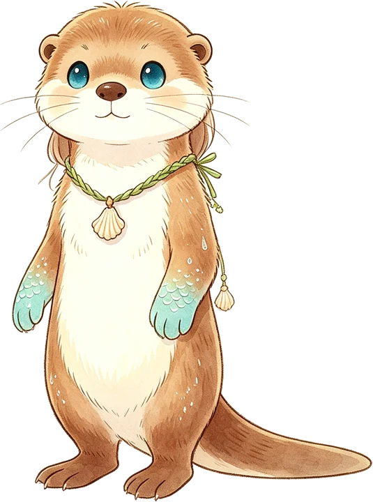

<!DOCTYPE html>
<html lang="zh-CN">
<head>
<meta charset="UTF-8">
<meta name="viewport" content="width=device-width, initial-scale=1.0, viewport-fit=cover">
<title>儿童德语：跟小獭 Otti 学德语（中德双语）| 德语学习手册</title>
<meta name="description" content="给零基础的孩子和大人：颜色、数字、超市等主题，点图听德语、看中德双语字幕的小故事、听音选图小游戏。每个词句都有中文翻译和谐音。">
<link rel="canonical" href="https://www.uuoo.site/kinder/">
<meta name="theme-color" content="#58cc02">
<meta name="color-scheme" content="light dark">
<link rel="icon" href="otti.webp">
<!-- 由 tools/gen-kinder.py 从 template.html + themes.json 生成，勿手改 kinder/index.html -->
<style>
:root{
  --bg:#fffaf0;--surface:#ffffff;--text:#2b2b2b;--dim:#5f6368;--border:#eadfcb;
  --brand:#58cc02;--brand-text:#2f7a00;--accent:#1c8fd6;--shadow:0 4px 14px rgba(80,60,20,.10);
  --der:#1565c0;--die:#c62828;--das:#2e7d32;--sub-bg:rgba(0,0,0,.72);--sub-text:#fff;--sub-zh:#ffe08a;
  --ok:#2e7d32;--bad:#c62828;
}
:root[data-theme=dark]{
  --bg:#17181a;--surface:#222427;--text:#ececec;--dim:#a9adb3;--border:#34373c;
  --brand-text:#8be04e;--accent:#6cc1ff;--shadow:0 4px 14px rgba(0,0,0,.4);
  --der:#82b4ff;--die:#ff8a80;--das:#81d68a;--ok:#81d68a;--bad:#ff8a80;
}
@media (prefers-color-scheme:dark){:root:not([data-theme=light]){
  --bg:#17181a;--surface:#222427;--text:#ececec;--dim:#a9adb3;--border:#34373c;
  --brand-text:#8be04e;--accent:#6cc1ff;--shadow:0 4px 14px rgba(0,0,0,.4);
  --der:#82b4ff;--die:#ff8a80;--das:#81d68a;--ok:#81d68a;--bad:#ff8a80;
}}
*{box-sizing:border-box;-webkit-tap-highlight-color:transparent}
html,body{margin:0;background:var(--bg);color:var(--text);font:16px/1.6 -apple-system,BlinkMacSystemFont,"PingFang SC","Noto Sans SC","Microsoft YaHei",sans-serif}
button{font:inherit;color:inherit;cursor:pointer}
a{color:var(--accent)}
.wrap{max-width:720px;margin:0 auto;padding:12px 16px calc(24px + env(safe-area-inset-bottom))}
.top{display:flex;align-items:center;gap:10px;min-height:48px}
.top a.back,.top button.back{display:inline-flex;align-items:center;min-height:44px;padding:0 12px;border-radius:22px;border:1px solid var(--border);background:var(--surface);text-decoration:none;color:var(--text);font-size:14px;white-space:nowrap}
.top h1{flex:1;margin:0;font-size:18px;line-height:1.3;min-width:0}
.top h1 small{display:block;font-size:12px;font-weight:400;color:var(--dim)}
.hero{display:flex;align-items:center;gap:12px;margin:8px 0 16px;padding:14px;border-radius:20px;background:var(--surface);box-shadow:var(--shadow)}
.hero img{width:84px;height:auto;flex-shrink:0}
.hero p{margin:0;font-size:15px}
.hero .say{font-size:13px;color:var(--dim);margin-top:4px}
.grid{display:grid;grid-template-columns:repeat(auto-fill,minmax(150px,1fr));gap:12px}
.tcard{border:none;border-radius:20px;padding:18px 10px;text-align:center;box-shadow:var(--shadow);color:#2b2b2b;min-height:132px}
.tcard .ic{font-size:44px;line-height:1.2}
.tcard b{display:block;font-size:19px}
.tcard span{font-size:14px}
.tcard.soon{display:block;text-decoration:none;background:var(--surface);color:var(--dim);min-height:132px}.tcard.soon .ic{opacity:.6}
.note{margin-top:20px;font-size:13px;color:var(--dim);line-height:1.8}
.tabs{display:flex;gap:8px;margin:4px 0 12px}
.tabs button{flex:1;min-width:0;min-height:48px;padding:0 4px;border-radius:24px;border:2px solid var(--border);background:var(--surface);font-size:14px;font-weight:600;white-space:nowrap}
.tabs button[aria-selected=true]{border-color:var(--brand);background:var(--brand);color:#14240a}
.tip{font-size:13px;color:var(--dim);background:var(--surface);border-radius:14px;padding:10px 12px;margin-bottom:12px;border:1px dashed var(--border)}
/* 场景：可点的物品 */
.scene{position:relative;border-radius:24px;padding:16px 8px;display:flex;flex-wrap:wrap;justify-content:center;gap:6px;min-height:260px;box-shadow:var(--shadow)}
.obj{width:76px;height:76px;border:none;background:rgba(255,255,255,.55);border-radius:22px;font-size:44px;line-height:1;display:flex;align-items:center;justify-content:center;animation:bob 3s ease-in-out infinite;transition:transform .15s}
.obj:nth-child(2n){animation-delay:-1s}.obj:nth-child(3n){animation-delay:-2s}
.obj:active{transform:scale(.9)}
.obj.on{background:#fff;outline:3px solid var(--brand)}
.obj .many{font-size:20px;line-height:1.1;display:flex;flex-wrap:wrap;justify-content:center;width:64px}
@keyframes bob{50%{transform:translateY(-4px)}}
@media (prefers-reduced-motion:reduce){.obj{animation:none}}
.card{margin-top:12px;background:var(--surface);border-radius:20px;padding:14px 16px;box-shadow:var(--shadow);display:none}
.card.show{display:block}
.card .row{display:flex;align-items:center;gap:12px}
.card .big{font-size:56px;line-height:1}
.card .w{font-size:28px;font-weight:700;line-height:1.2}
.art-der{color:var(--der)}.art-die{color:var(--die)}.art-das{color:var(--das)}
.card .zh{font-size:17px}
.py{font-size:13px;color:var(--dim)}
.spk{flex-shrink:0;width:44px;height:44px;border-radius:50%;border:none;background:rgba(88,204,2,.18);font-size:20px}
.spk.playing{background:var(--brand)}
.sent{display:flex;gap:10px;align-items:flex-start;margin-top:12px;padding-top:12px;border-top:1px solid var(--border)}
.sent .de{font-size:18px;font-weight:600}
/* 故事：画面 + 字幕，像看动画片 */
.screen{position:relative;border-radius:24px;overflow:hidden;aspect-ratio:16/10;display:flex;align-items:center;justify-content:center;box-shadow:var(--shadow)}
.screen .pic{font-size:min(22vw,120px);line-height:1;text-align:center;transition:transform .3s,opacity .3s;padding-bottom:22%}
.screen .pic.pop{animation:pop .45s}
@keyframes pop{0%{transform:scale(.6);opacity:.3}100%{transform:scale(1);opacity:1}}
.subs{position:absolute;left:8px;right:8px;bottom:8px;text-align:center;background:var(--sub-bg);color:var(--sub-text);border-radius:12px;padding:6px 10px}
.subs .sd{font-size:17px;font-weight:600;line-height:1.35}
.subs .sz{font-size:15px;color:var(--sub-zh);line-height:1.35}
.subs .sp{font-size:12px;color:#d8d8d8;line-height:1.35}
.subs .sp[hidden]{display:none}
.ctrl{display:flex;gap:10px;justify-content:center;align-items:center;margin:12px 0}
.ctrl button{min-width:52px;min-height:52px;border-radius:26px;border:none;background:var(--surface);box-shadow:var(--shadow);font-size:20px;padding:0 14px}
.ctrl button.main{background:var(--brand);color:#14240a;font-weight:700;font-size:17px;padding:0 22px}
.ctrl label{font-size:14px;display:flex;align-items:center;gap:6px;min-height:44px}
.lines{list-style:none;margin:0;padding:0}
.lines li{display:flex;gap:10px;align-items:flex-start;padding:10px 12px;border-radius:14px;cursor:pointer}
.lines li.cur{background:rgba(88,204,2,.14)}
.lines .n{font-size:20px;min-width:36px;white-space:nowrap;text-align:center;flex-shrink:0}
.lines .de{font-weight:600}
.lines .zh{font-size:14px}
/* 游戏 */
.game{text-align:center}
.game .q{display:flex;align-items:center;justify-content:center;gap:12px;margin:8px 0 16px;font-size:17px}
.game .q .spk{width:64px;height:64px;font-size:30px}
.opts{display:grid;grid-template-columns:1fr 1fr;gap:12px}
.opts button{min-height:110px;border-radius:22px;border:3px solid transparent;background:var(--surface);box-shadow:var(--shadow);font-size:54px;line-height:1}
.opts button .many{font-size:22px;display:flex;flex-wrap:wrap;justify-content:center;max-width:120px;margin:0 auto}
.opts button.ok{border-color:var(--ok);background:rgba(46,125,50,.12)}
.opts button.bad{border-color:var(--bad);animation:shake .35s}
@keyframes shake{25%{transform:translateX(-6px)}75%{transform:translateX(6px)}}
.fb{min-height:52px;margin-top:12px;font-size:16px}
.fb .ok{color:var(--ok);font-weight:700}.fb .bad{color:var(--bad);font-weight:700}
.stars{font-size:26px;letter-spacing:2px;margin-bottom:6px}
.done{font-size:20px;margin:24px 0 12px}
.btn{min-height:48px;padding:0 22px;border-radius:24px;border:none;background:var(--brand);color:#14240a;font-weight:700;font-size:16px}
/* 官方教材伴读 */
.oif{background:var(--surface);border-radius:20px;padding:14px 16px;box-shadow:var(--shadow);text-align:center}
.oif-h{font-size:17px;font-weight:700;margin-bottom:10px}.oif-h small{display:block;font-size:13px;font-weight:400;color:var(--dim)}
.oif-btn{display:flex;align-items:center;justify-content:center;text-decoration:none;width:100%}
.oif-link{display:inline-flex;align-items:center;min-height:44px;font-size:14px}
.gh{font-size:17px;margin:22px 0 8px}
.sum{margin:0;padding-left:22px}.sum li{margin-bottom:8px}
.voc,.gcard{background:var(--surface);border-radius:16px;box-shadow:var(--shadow);padding:4px 12px}
.gcard{margin-bottom:12px;padding:12px}.gcard p{margin:4px 0 6px;font-size:14px}
.vrow{display:flex;gap:10px;align-items:center;padding:8px 0;border-bottom:1px solid var(--border)}
.vrow:last-child{border-bottom:none}
.vrow .de{font-weight:600}
.foot{margin-top:28px;font-size:12px;color:var(--dim);line-height:1.8;border-top:1px solid var(--border);padding-top:12px}
</style>
</head>
<body>
<div class="wrap" id="app"></div>
<script>
const THEMES=[{"id":"farben","de":"Farben","zh":"颜色","icon":"🎨","bg":["#fff3d6","#ffd9e8"],"focus":"句型：Der Apfel ist rot.（苹果是红色的。）颜色词放在 ist 后面，词形不变。","items":[{"e":"🍎","de":"rot","zh":"红色","py":"罗特","s":"Der Apfel ist rot.","sz":"苹果是红色的。","sp":"戴尔 阿普菲尔 伊斯特 罗特。","wa":"e1588771eb.mp3","sa":"5eae039d63.mp3"},{"e":"🍌","de":"gelb","zh":"黄色","py":"格尔普","s":"Die Banane ist gelb.","sz":"香蕉是黄色的。","sp":"迪 巴纳讷 伊斯特 格尔普。","wa":"14d8bb1fad.mp3","sa":"21b21c074a.mp3"},{"e":"🐸","de":"grün","zh":"绿色","py":"格吕恩","s":"Der Frosch ist grün.","sz":"青蛙是绿色的。","sp":"戴尔 弗罗施 伊斯特 格吕恩。","wa":"bbbb29c05f.mp3","sa":"7260fef9e3.mp3"},{"e":"🐳","de":"blau","zh":"蓝色","py":"布劳","s":"Der Wal ist blau.","sz":"鲸鱼是蓝色的。","sp":"戴尔 瓦尔 伊斯特 布劳。","wa":"25fcdae0c8.mp3","sa":"a5b0831abb.mp3"},{"e":"🍊","de":"orange","zh":"橙色","py":"奥朗舍","s":"Die Orange ist orange.","sz":"橙子是橙色的。","sp":"迪 奥朗舍 伊斯特 奥朗舍。","wa":"ef0ebbb772.mp3","sa":"d2397a4085.mp3"},{"e":"🍇","de":"lila","zh":"紫色","py":"利拉","s":"Die Traube ist lila.","sz":"葡萄是紫色的。","sp":"迪 特劳贝 伊斯特 利拉。","wa":"6101d347fe.mp3","sa":"fbe5ad7d28.mp3"},{"e":"🐻","de":"braun","zh":"棕色","py":"布劳恩","s":"Der Bär ist braun.","sz":"熊是棕色的。","sp":"戴尔 贝尔 伊斯特 布劳恩。","wa":"c0b3655864.mp3","sa":"edc8f8cd23.mp3"},{"e":"⛄","de":"weiß","zh":"白色","py":"魏斯","s":"Der Schneemann ist weiß.","sz":"雪人是白色的。","sp":"戴尔 施内曼 伊斯特 魏斯。","wa":"3b3773372a.mp3","sa":"7e985363fc.mp3"},{"e":"🐈‍⬛","de":"schwarz","zh":"黑色","py":"施瓦尔茨","s":"Die Katze ist schwarz.","sz":"猫是黑色的。","sp":"迪 卡策 伊斯特 施瓦尔茨。","wa":"8c6817dd91.mp3","sa":"65c81f59fd.mp3"},{"e":"🐷","de":"rosa","zh":"粉红色","py":"罗萨","s":"Das Schwein ist rosa.","sz":"小猪是粉红色的。","sp":"达斯 施魏恩 伊斯特 罗萨。","wa":"5efc86ca88.mp3","sa":"59a8ac29ac.mp3"}],"story":{"de":"Ottis buntes Bild","zh":"小獭的彩色画","lines":[{"e":"🌞🦦","de":"Guten Morgen! Ich bin Otti.","zh":"早上好！我是小獭奥蒂。","py":"古腾 摩根！伊希 宾 奥蒂。","a":"ce68e3a2eb.mp3"},{"e":"🎨🖌️","de":"Heute male ich ein Bild.","zh":"今天我要画一幅画。","py":"霍伊特 马勒 伊希 艾因 比尔特。","a":"0981c4a25c.mp3"},{"e":"🍎","de":"Ich male einen Apfel. Der Apfel ist rot.","zh":"我画一个苹果。苹果是红色的。","py":"伊希 马勒 艾嫩 阿普菲尔。戴尔 阿普菲尔 伊斯特 罗特。","a":"efbd208029.mp3"},{"e":"🌳","de":"Dann male ich einen Baum. Der Baum ist grün.","zh":"然后我画一棵树。树是绿色的。","py":"丹 马勒 伊希 艾嫩 鲍姆。戴尔 鲍姆 伊斯特 格吕恩。","a":"28031bf45f.mp3"},{"e":"☀️","de":"Die Sonne ist gelb.","zh":"太阳是黄色的。","py":"迪 宗讷 伊斯特 格尔普。","a":"cd9dd06567.mp3"},{"e":"🌊","de":"Und das Wasser ist blau.","zh":"水是蓝色的。","py":"翁特 达斯 瓦塞尔 伊斯特 布劳。","a":"622102a99c.mp3"},{"e":"🌈","de":"Rot, gelb, grün, blau – ein Regenbogen!","zh":"红、黄、绿、蓝——一道彩虹！","py":"罗特，格尔普，格吕恩，布劳——艾因 雷根博根！","a":"d5540ed089.mp3"},{"e":"🖼️🦦","de":"Mein Bild ist fertig. Es ist so bunt!","zh":"我的画画好了。好多颜色呀！","py":"迈因 比尔特 伊斯特 费尔蒂希。埃斯 伊斯特 佐 布恩特！","a":"1aed32b025.mp3"}]},"guide":{"teil":1,"url":"https://sprachportal.at/deutsch-fuer-kinder/deutsch-lernen-mit-ilwa/teil-1-farben/","pdf":"https://sprachportal.at/fileadmin/user_upload/meinsprachportal-at/Ilwa/pdf/Teil-1-Farben.pdf","story":"Ilwa taucht ab","storyZh":"伊尔瓦潜进画里","pages":"故事在 PDF 第 1–2 页，后面是给老师的游戏和练习。","summary":["伊尔瓦推开一扇栗棕色的门，来到幼儿园的「彩虹组」。老师 Gernot 欢迎她。两个男孩把蓝色和黄色的水倒进瓶子里摇一摇，水变成了绿色，伊尔瓦觉得像变魔术。","老师请伊尔瓦一起画「彩虹墙」。孩子们用沾了颜料的手在白纸上按手印。红手和黄手按在一起，变成了橙色——「红加黄变成橙！」","伊尔瓦把樱桃红和天蓝混在一起，调出了紫色，和她头发一个颜色。她太兴奋了，挥着画笔把紫色溅到了自己鼻子上，大家笑她长了「雀斑」。","有个孩子画了一座乌黑的火山。小女孩 Aya 用蓝色蜡笔画了一大片海。","伊尔瓦挥一挥她的魔法袜子，变得很小，跳进 Aya 的画里游泳。小朋友都围过来看，Aya 高兴得脸都红了。","伊尔瓦从画里跳出来，头发上还挂着海草。她夸 Aya 的海很适合游泳，还偷偷送她一个金棕色的贝壳。贝壳放在耳边，能听到大海的声音。","大家都想听，伊尔瓦最开心。最后她哼起自己最喜欢的歌。"],"vocab":[{"de":"mischen","zh":"混合（颜色）","py":"米申","a":"10e4eae03f.mp3"},{"de":"schütteln","zh":"摇","py":"许特尔恩","a":"4327fd90b3.mp3"},{"de":"rühren","zh":"搅拌","py":"吕伦","a":"164dc53a6d.mp3"},{"de":"bekommen","zh":"得到","py":"贝科门","a":"870acc20dd.mp3"},{"de":"anmalen","zh":"涂上颜色","py":"安 马伦","a":"6486d83a43.mp3"},{"de":"hellblau","zh":"浅蓝","py":"黑尔 布劳","a":"8ad6fb215a.mp3"},{"de":"dunkelrot","zh":"深红","py":"敦克尔 罗特","a":"8d302e18fb.mp3"},{"de":"himmelblau","zh":"天蓝","py":"希梅尔 布劳","a":"c2b109972a.mp3"},{"de":"tannengrün","zh":"墨绿（冷杉绿）","py":"坦嫩 格吕恩","a":"98c8e9d3dd.mp3"},{"de":"froschgrün","zh":"青蛙绿","py":"弗罗施 格吕恩","a":"01682b655f.mp3"},{"de":"kirschrot","zh":"樱桃红","py":"基尔施 罗特","a":"558c797e00.mp3"},{"de":"zitronengelb","zh":"柠檬黄","py":"齐特罗嫩 格尔普","a":"6347a3712f.mp3"},{"de":"goldbraun","zh":"金棕","py":"戈尔特 布劳恩","a":"652a3382cf.mp3"},{"de":"kastanienbraun","zh":"栗子棕","py":"卡斯塔尼恩 布劳恩","a":"8a4a26e90f.mp3"},{"de":"schneeweiß","zh":"雪白","py":"施内 魏斯","a":"2394dc57de.mp3"},{"de":"mausgrau","zh":"鼠灰","py":"毛斯 格劳","a":"b570b9fc4a.mp3"},{"de":"rabenschwarz","zh":"乌黑（渡鸦黑）","py":"拉本 施瓦尔茨","a":"e54e76eb54.mp3"},{"de":"flamingorosa","zh":"火烈鸟粉","py":"弗拉明戈 罗萨","a":"3924c90f74.mp3"},{"de":"veilchenlila","zh":"紫罗兰紫","py":"法伊尔欣 利拉","a":"282460abc8.mp3"},{"de":"fuchsorange","zh":"狐狸橙","py":"富克斯 奥朗舍","a":"a2dd47cdfe.mp3"}],"grammar":[{"t":"颜色怎么「变」：aus … wird …","zh":"「用 A 和 B 变出 C」德语说 Aus A und B wird C。wird 是「变成」。","ex":[{"de":"Aus Rot und Gelb wird Orange.","zh":"红加黄变成橙。","py":"奥斯 罗特 翁特 格尔普 维尔特 奥朗舍。","a":"62ab4a049e.mp3"},{"de":"Aus Blau und Gelb wird Grün.","zh":"蓝加黄变成绿。","py":"奥斯 布劳 翁特 格尔普 维尔特 格吕恩。","a":"eb93fa9837.mp3"}]},{"t":"可分动词 anmalen（涂色）","zh":"anmalen 用在句子里要拆开：malen 放第二位，an 跑到句子最后。","ex":[{"de":"Ich male den Apfel rot an.","zh":"我把苹果涂成红色。","py":"伊希 马勒 登 阿普菲尔 罗特 安。","a":"10d55cd013.mp3"},{"de":"Wir malen die Wand bunt an.","zh":"我们把墙涂得五颜六色。","py":"维尔 马伦 迪 万特 布恩特 安。","a":"21adf00842.mp3"}]},{"t":"组合颜色词：东西 + 颜色","zh":"德语喜欢把「像什么」直接拼在颜色前面，写成一个词：Zitrone（柠檬）+ gelb → zitronengelb（柠檬黄）。hell- 表示浅，dunkel- 表示深。","ex":[{"de":"Der Himmel ist himmelblau.","zh":"天空是天蓝色的。","py":"戴尔 希梅尔 伊斯特 希梅尔 布劳。","a":"807cf12628.mp3"},{"de":"Der Frosch ist froschgrün.","zh":"青蛙是青蛙绿。","py":"戴尔 弗罗施 伊斯特 弗罗施 格吕恩。","a":"a1f7542128.mp3"}]},{"t":"wenn（如果）和 weil（因为）","zh":"wenn 和 weil 后面的小句，动词要放到最后。","ex":[{"de":"Wenn ich Rot und Blau mische, bekomme ich Lila.","zh":"如果我把红和蓝混在一起，就得到紫色。","py":"文 伊希 罗特 翁特 布劳 米舍，贝科默 伊希 利拉。","a":"4166e85254.mp3"},{"de":"Das Monster ist rot, weil es Kirschen isst.","zh":"怪兽是红色的，因为它吃樱桃。","py":"达斯 蒙斯特尔 伊斯特 罗特，魏尔 埃斯 基尔申 伊斯特。","a":"8ccf524fd0.mp3"}]}],"notes":["Ilwa 伊尔瓦：故事主角，头发是紫色的，有一只能变魔术的袜子（Zaubersocke）。","Kunterbunt：五颜六色，这里是幼儿园小组的名字。"]}},{"id":"zahlen","de":"Zahlen","zh":"数字","icon":"🔢","bg":["#e3f4ff","#e9e3ff"],"focus":"句型：Der Hund hat vier Beine.（狗有四条腿。）数字放在名词前面；两个以上一般用复数。","items":[{"e":"⚽","n":1,"de":"eins","zh":"一","py":"艾因斯","s":"Ein Ball.","sz":"一个球。","sp":"艾因 巴尔。","wa":"d79914a271.mp3","sa":"206568762f.mp3"},{"e":"👀","n":1,"de":"zwei","zh":"二","py":"茨瓦伊","s":"Ich habe zwei Augen.","sz":"我有两只眼睛。","sp":"伊希 哈贝 茨瓦伊 奥根。","wa":"89f7b2e913.mp3","sa":"598d64d81c.mp3"},{"e":"🐷","n":3,"de":"drei","zh":"三","py":"德赖","s":"Drei kleine Schweine.","sz":"三只小猪。","sp":"德赖 克莱讷 施魏讷。","wa":"7782517f7a.mp3","sa":"3bcbedfdb3.mp3"},{"e":"🐕","n":1,"de":"vier","zh":"四","py":"菲尔","s":"Der Hund hat vier Beine.","sz":"狗有四条腿。","sp":"戴尔 洪特 哈特 菲尔 拜讷。","wa":"76549157ec.mp3","sa":"beab4aa184.mp3"},{"e":"✋","n":1,"de":"fünf","zh":"五","py":"芬夫","s":"Eine Hand hat fünf Finger.","sz":"一只手有五根手指。","sp":"艾讷 汉特 哈特 芬夫 芬格尔。","wa":"5b3d49a2cd.mp3","sa":"ddde646e5b.mp3"},{"e":"🥚","n":6,"de":"sechs","zh":"六","py":"泽克斯","s":"Sechs Eier.","sz":"六个鸡蛋。","sp":"泽克斯 艾尔。","wa":"4dea3e5f65.mp3","sa":"735c5d9421.mp3"},{"e":"🌈","n":1,"de":"sieben","zh":"七","py":"齐本","s":"Der Regenbogen hat sieben Farben.","sz":"彩虹有七种颜色。","sp":"戴尔 雷根博根 哈特 齐本 法尔本。","wa":"7f3e71cc09.mp3","sa":"b9b7ccc77c.mp3"},{"e":"🐙","n":1,"de":"acht","zh":"八","py":"阿赫特","s":"Der Krake hat acht Arme.","sz":"章鱼有八条腕足。","sp":"戴尔 克拉克 哈特 阿赫特 阿尔默。","wa":"a673c13c96.mp3","sa":"3c3b23ac12.mp3"},{"e":"🎈","n":9,"de":"neun","zh":"九","py":"诺伊恩","s":"Neun Luftballons.","sz":"九个气球。","sp":"诺伊恩 卢夫特巴隆斯。","wa":"dab3bab179.mp3","sa":"242885563e.mp3"},{"e":"🙌","n":1,"de":"zehn","zh":"十","py":"灿","s":"Ich habe zehn Finger.","sz":"我有十根手指。","sp":"伊希 哈贝 灿 芬格尔。","wa":"b884c2537d.mp3","sa":"28830bfa6a.mp3"}],"story":{"de":"Otti zählt","zh":"小獭数一数","lines":[{"e":"🦦🏞️","de":"Otti geht zum Fluss.","zh":"小獭奥蒂去河边。","py":"奥蒂 盖特 楚姆 弗卢斯。","a":"7da18eff9d.mp3"},{"e":"🦆","de":"Da schwimmt eine Ente.","zh":"那儿游着一只鸭子。","py":"达 施文特 艾讷 恩特。","a":"f10e301488.mp3"},{"e":"🦆🦆","de":"Jetzt sind es zwei Enten.","zh":"现在有两只鸭子了。","py":"耶茨特 津特 埃斯 茨瓦伊 恩滕。","a":"ce38d5442a.mp3"},{"e":"🐟🐟🐟","de":"Im Wasser sind drei Fische.","zh":"水里有三条鱼。","py":"伊姆 瓦塞尔 津特 德赖 菲舍。","a":"751daf4e38.mp3"},{"e":"🪨🪨🪨🪨🪨","de":"Otti zählt die Steine: eins, zwei, drei, vier, fünf.","zh":"奥蒂数石头：一、二、三、四、五。","py":"奥蒂 采尔特 迪 施泰讷：艾因斯，茨瓦伊，德赖，菲尔，芬夫。","a":"0f5a12f60e.mp3"},{"e":"🐸","de":"Ein Frosch springt: hopp, hopp, hopp!","zh":"一只青蛙在跳：蹦、蹦、蹦！","py":"艾因 弗罗施 施普林特：霍普，霍普，霍普！","a":"e9d910f9a2.mp3"},{"e":"🦦🦦","de":"Zwei Otter: Otti und ihre Mama.","zh":"两只水獭：奥蒂和她的妈妈。","py":"茨瓦伊 奥特尔：奥蒂 翁特 伊勒 妈妈。","a":"c2ecc24e8e.mp3"},{"e":"🌙⭐","de":"Gute Nacht! Morgen zählen wir weiter.","zh":"晚安！明天我们接着数。","py":"古特 纳赫特！摩根 采伦 维尔 外特尔。","a":"af84bb3bac.mp3"}]},"guide":{"teil":4,"url":"https://sprachportal.at/deutsch-fuer-kinder/deutsch-lernen-mit-ilwa/teil-4-zahlen/","pdf":"https://sprachportal.at/fileadmin/user_upload/meinsprachportal-at/Ilwa/pdf/Teil-4-Zahlen.pdf","story":"Ilwa und die zauberhafte Zehn","storyZh":"伊尔瓦和神奇的十","pages":"故事在 PDF 开头几页，后面是数数游戏和练习。","summary":["秋天刮风，彩色的树叶满天飞，落了伊尔瓦一头。她数了 5 片叶子，分给朋友 Kilian 3 片，自己留 2 片，还把叶子别在耳朵上当耳环。","孩子们在老栗子树下捡栗子。Fatih 捡了 7 个；另外两个孩子把栗子放在一起，一共 8 个，比他多，Fatih 不高兴了。","伊尔瓦又找到 4 个栗子，分给 4 个小朋友每人 1 个。Fatih 笑了。","地上画着跳房子的格子。Fatih 教伊尔瓦一边跳一边数：1、2、3……10。伊尔瓦跳到了她最喜欢的数字：十！","伊尔瓦把一块小石头放进魔法袜子，变出了一大盒亮晶晶的弹珠，大喊「人人都有弹珠！」大家都来分。分享真开心。","最后伊尔瓦唱起她的歌：做自己真好，今天是特别的一天。"],"vocab":[{"de":"die Zahl","zh":"数字","py":"迪 察尔","a":"1a3c6529ef.mp3"},{"de":"die Ziffer","zh":"数码（0–9 这些符号）","py":"迪 齐弗尔","a":"43afec8e35.mp3"},{"de":"viel","zh":"多","py":"菲尔","a":"ea0c662de5.mp3"},{"de":"wenig","zh":"少","py":"维尼希","a":"9a1ca28b99.mp3"},{"de":"gleich viel","zh":"一样多","py":"格莱希 菲尔","a":"6eba4dd79d.mp3"},{"de":"ein paar","zh":"几个","py":"艾因 帕尔","a":"fe039ee516.mp3"},{"de":"alle","zh":"所有人／全部","py":"阿勒","a":"ac78aefc17.mp3"},{"de":"kein","zh":"没有","py":"凯因","a":"a4dfa6896b.mp3"},{"de":"zusammen","zh":"一共／一起","py":"楚扎门","a":"c341d8c38e.mp3"},{"de":"wie viele","zh":"多少个","py":"维 菲勒","a":"153f15e57c.mp3"},{"de":"mehr","zh":"更多","py":"梅尔","a":"1960ac5a2d.mp3"},{"de":"weniger","zh":"更少","py":"维尼格尔","a":"15353354d9.mp3"},{"de":"am meisten","zh":"最多","py":"阿姆 迈斯滕","a":"93c6a6b6dd.mp3"},{"de":"zählen","zh":"数","py":"采伦","a":"8b0628ed73.mp3"},{"de":"teilen","zh":"分享／分","py":"泰伦","a":"a8b016dd0c.mp3"},{"de":"nehmen","zh":"拿","py":"内门","a":"44bfde47a7.mp3"},{"de":"geben","zh":"给","py":"格本","a":"2d37761f7b.mp3"},{"de":"schenken","zh":"送（礼物）","py":"申肯","a":"27221e7cb1.mp3"},{"de":"fehlen","zh":"缺少","py":"费伦","a":"5f507657a1.mp3"},{"de":"das Blatt","zh":"树叶","py":"达斯 布拉特","a":"556edb699a.mp3"},{"de":"die Kastanie","zh":"栗子","py":"迪 卡斯塔尼耶","a":"f3e0408388.mp3"},{"de":"die Murmel","zh":"弹珠","py":"迪 穆尔梅尔","a":"9a551c4848.mp3"},{"de":"der Stein","zh":"石头","py":"戴尔 施泰因","a":"3dd0556917.mp3"}],"grammar":[{"t":"问「多少个」：Wie viele …?","zh":"wie viele 后面接复数名词。回答直接说数字 + 名词。","ex":[{"de":"Wie viele Kastanien hast du?","zh":"你有几个栗子？","py":"维 菲勒 卡斯塔尼恩 哈斯特 杜？","a":"e0ac604008.mp3"},{"de":"Ich habe sieben Kastanien.","zh":"我有七个栗子。","py":"伊希 哈贝 齐本 卡斯塔尼恩。","a":"46ab346e8b.mp3"}]},{"t":"比多少：mehr / weniger als","zh":"mehr als = 比……多，weniger als = 比……少。奥地利人常加一个 um：um eins weniger（少一个）。","ex":[{"de":"Du hast mehr als ich.","zh":"你的比我多。","py":"杜 哈斯特 梅尔 阿尔斯 伊希。","a":"be1a8e2c8d.mp3"},{"de":"Ich habe um ein Blatt weniger als du.","zh":"我比你少一片叶子。","py":"伊希 哈贝 乌姆 艾因 布拉特 维尼格尔 阿尔斯 杜。","a":"0e59042109.mp3"}]},{"t":"最多：am meisten","zh":"viel（多）→ mehr（更多）→ am meisten（最多）。","ex":[{"de":"Ich habe am meisten gesammelt!","zh":"我捡得最多！","py":"伊希 哈贝 阿姆 迈斯滕 格扎梅尔特！","a":"9d4645e105.mp3"}]},{"t":"缺几个：mir fehlen …","zh":"fehlen 的意思是「缺」，缺的东西做主语，「我」用 mir。","ex":[{"de":"Mir fehlen drei Steine.","zh":"我还缺三块石头。","py":"米尔 费伦 德赖 施泰讷。","a":"04b3164c2d.mp3"},{"de":"Teilen macht Spaß!","zh":"分享真开心！","py":"泰伦 马赫特 施帕斯！","a":"d80ab72588.mp3"}]}],"notes":["一个变多个要用复数：ein Blatt → zwei Blätter，eine Kastanie → zwei Kastanien，ein Stein → zwei Steine。"]}},{"id":"supermarkt","de":"Supermarkt","zh":"超市","icon":"🛒","bg":["#e6f8e0","#fff6d1"],"focus":"句型：Ich kaufe Brot.（我买面包。）/ Wir brauchen Milch.（我们需要牛奶。）名词前的 der / die / das 要和名词一起记。","items":[{"e":"🍞","art":"das","de":"Brot","zh":"面包","py":"达斯 布罗特","s":"Ich kaufe Brot.","sz":"我买面包。","sp":"伊希 考费 布罗特。","wa":"ec5a814733.mp3","sa":"6e0c231b18.mp3"},{"e":"🥛","art":"die","de":"Milch","zh":"牛奶","py":"迪 米尔希","s":"Die Milch ist kalt.","sz":"牛奶是凉的。","sp":"迪 米尔希 伊斯特 卡尔特。","wa":"5923ede295.mp3","sa":"d9906337d0.mp3"},{"e":"🧀","art":"der","de":"Käse","zh":"奶酪","py":"戴尔 凯泽","s":"Ich mag Käse.","sz":"我喜欢奶酪。","sp":"伊希 马克 凯泽。","wa":"83398676f2.mp3","sa":"09f3b80e6e.mp3"},{"e":"🥕","art":"die","de":"Karotte","zh":"胡萝卜","py":"迪 卡罗特","s":"Der Hase isst eine Karotte.","sz":"兔子吃一根胡萝卜。","sp":"戴尔 哈泽 伊斯特 艾讷 卡罗特。","wa":"c826694ff5.mp3","sa":"967547d8bb.mp3"},{"e":"🍅","art":"die","de":"Tomate","zh":"西红柿","py":"迪 托马特","s":"Die Tomate ist rot.","sz":"西红柿是红色的。","sp":"迪 托马特 伊斯特 罗特。","wa":"586db53009.mp3","sa":"5d75fe1b4d.mp3"},{"e":"🥚","art":"das","de":"Ei","zh":"鸡蛋","py":"达斯 艾","s":"Wir brauchen sechs Eier.","sz":"我们需要六个鸡蛋。","sp":"维尔 布劳亨 泽克斯 艾尔。","wa":"6ea462a8ab.mp3","sa":"5d3fa3672d.mp3"},{"e":"🧃","art":"der","de":"Saft","zh":"果汁","py":"戴尔 扎夫特","s":"Der Saft ist süß.","sz":"果汁是甜的。","sp":"戴尔 扎夫特 伊斯特 聚斯。","wa":"d11ee02e30.mp3","sa":"c197951306.mp3"},{"e":"🍌","art":"die","de":"Banane","zh":"香蕉","py":"迪 巴纳讷","s":"Ich möchte eine Banane.","sz":"我想要一根香蕉。","sp":"伊希 默希特 艾讷 巴纳讷。","wa":"207364aa5c.mp3","sa":"4d8d845ac3.mp3"},{"e":"🍦","art":"das","de":"Eis","zh":"冰淇淋","py":"达斯 艾斯","s":"Darf ich ein Eis haben?","sz":"我可以吃个冰淇淋吗？","sp":"达尔夫 伊希 艾因 艾斯 哈本？","wa":"6a9fb3368a.mp3","sa":"7e7b67d25c.mp3"},{"e":"🛒","art":"der","de":"Einkaufswagen","zh":"购物车","py":"戴尔 艾因考夫斯瓦根","s":"Der Einkaufswagen ist voll.","sz":"购物车装满了。","sp":"戴尔 艾因考夫斯瓦根 伊斯特 福尔。","wa":"9648783602.mp3","sa":"ec5f77bc90.mp3"},{"e":"💶","art":"das","de":"Geld","zh":"钱","py":"达斯 格尔特","s":"Mama bezahlt mit Geld.","sz":"妈妈用钱付账。","sp":"妈妈 贝察尔特 米特 格尔特。","wa":"a513ac8723.mp3","sa":"0991af312b.mp3"}],"story":{"de":"Einkaufen mit Mama","zh":"和妈妈去超市","lines":[{"e":"🦦🛒","de":"Otti und Mama gehen in den Supermarkt.","zh":"奥蒂和妈妈去超市。","py":"奥蒂 翁特 妈妈 盖恩 因 登 祖佩尔马尔克特。","a":"b58f4ea93d.mp3"},{"e":"📝","de":"Mama hat eine Liste.","zh":"妈妈有一张购物清单。","py":"妈妈 哈特 艾讷 利斯特。","a":"d3e7c8c259.mp3"},{"e":"🍞🥛","de":"Wir brauchen Brot und Milch.","zh":"我们需要面包和牛奶。","py":"维尔 布劳亨 布罗特 翁特 米尔希。","a":"cf5abf689b.mp3"},{"e":"🍅🥕","de":"Otti holt Tomaten und Karotten.","zh":"奥蒂去拿西红柿和胡萝卜。","py":"奥蒂 霍尔特 托马滕 翁特 卡罗滕。","a":"b4b7c35f45.mp3"},{"e":"🍦👀","de":"Mama, darf ich ein Eis haben?","zh":"妈妈，我可以吃个冰淇淋吗？","py":"妈妈，达尔夫 伊希 艾因 艾斯 哈本？","a":"be6f8ff7db.mp3"},{"e":"🙂","de":"Ja, aber nur ein kleines!","zh":"可以，不过只能要个小的！","py":"亚，阿伯尔 努尔 艾因 克莱讷斯！","a":"a2f8223273.mp3"},{"e":"💶","de":"An der Kasse bezahlt Mama.","zh":"妈妈在收银台付钱。","py":"安 戴尔 卡塞 贝察尔特 妈妈。","a":"5ced7a1246.mp3"},{"e":"🦦🍦","de":"Danke, Mama! Das Eis ist lecker!","zh":"谢谢妈妈！冰淇淋真好吃！","py":"丹克，妈妈！达斯 艾斯 伊斯特 莱克尔！","a":"cd643d66f5.mp3"}]},"guide":{"teil":14,"url":"https://sprachportal.at/deutsch-fuer-kinder/deutsch-lernen-mit-ilwa/teil-14-supermarkt/","pdf":"https://sprachportal.at/fileadmin/user_upload/meinsprachportal-at/Ilwa/pdf/Teil-14-Supermarkt.pdf","story":"Rutschpartie im Supermarkt","storyZh":"超市里的滑溜溜大冒险","pages":"故事在 PDF 开头几页，后面是购物游戏和练习。","summary":["伊尔瓦变成了一盒牛奶，藏在超市冷藏柜里、鸡蛋旁边，偷偷看人们买东西。冷柜里好冷，她直打哆嗦。","一位爸爸带着两个女儿 Lisa 和 Nora 来买东西，手里拿着购物清单。姐妹俩想拿巧克力，爸爸说：先买鸡蛋！","两个人同时去抓鸡蛋盒，盒子掉在地上，鸡蛋全碎了。伊尔瓦心想：这下成了「炒鸡蛋」！爸爸让孩子们原地别动，他去找人帮忙。","伊尔瓦从冷柜里跳出来，变回原样。地上滑溜溜的，她提议一起玩「滑滑梯」，姐妹俩很想玩。","这时一位推着购物车、弯着腰的老奶奶走过来。伊尔瓦赶紧提醒她：小心，冷柜这边地滑！老奶奶谢谢孩子们。","爸爸带着超市理货员回来，把地上的鸡蛋清理干净。理货员夸孩子们会照顾别人，还说：出点小意外没关系。","爸爸说还要去面包区，然后去收银台付钱。姐妹俩挥手道别，伊尔瓦唱着歌蹦蹦跳跳地走了。"],"vocab":[{"de":"der Einkaufswagen","zh":"购物车","py":"戴尔 艾因考夫斯 瓦根","a":"9648783602.mp3"},{"de":"das Regal","zh":"货架","py":"达斯 雷加尔","a":"c65f6cc8b0.mp3"},{"de":"die Kassa","zh":"收银台（奥地利说法）","py":"迪 卡萨","a":"1d4c2efcc7.mp3"},{"de":"die Geldbörse","zh":"钱包","py":"迪 格尔特 伯尔泽","a":"0d04eb6a32.mp3"},{"de":"die Einkaufsliste","zh":"购物清单","py":"迪 艾因考夫斯 利斯特","a":"0e774040c9.mp3"},{"de":"die Lebensmittel","zh":"食品","py":"迪 莱本斯 米特尔","a":"aba312f456.mp3"},{"de":"die Obstabteilung","zh":"水果区","py":"迪 奥普斯特 阿普泰隆","a":"075f23084b.mp3"},{"de":"die Gemüseabteilung","zh":"蔬菜区","py":"迪 格米泽 阿普泰隆","a":"5bf1bdcd0f.mp3"},{"de":"die Backwaren","zh":"面包糕点","py":"迪 巴克 瓦伦","a":"270fc2af5d.mp3"},{"de":"das Kühlregal","zh":"冷藏柜","py":"达斯 屈尔 雷加尔","a":"54ac083069.mp3"},{"de":"die Süßwaren","zh":"糖果零食","py":"迪 聚斯 瓦伦","a":"f1eabe4211.mp3"},{"de":"die Eierspeise","zh":"炒鸡蛋（奥地利说法）","py":"迪 艾尔 施拜泽","a":"4b10741da4.mp3"},{"de":"schieben","zh":"推","py":"希本","a":"10511f2940.mp3"},{"de":"einkaufen","zh":"买东西","py":"艾因 考芬","a":"0b240a46f6.mp3"},{"de":"zurücklegen","zh":"放回去","py":"楚吕克 莱根","a":"cd9c4d3dd4.mp3"},{"de":"bezahlen","zh":"付钱","py":"贝察伦","a":"ab8526793d.mp3"},{"de":"auf","zh":"在……上面","py":"奥夫","a":"ddf835c91b.mp3"},{"de":"unter","zh":"在……下面","py":"温特尔","a":"6766177a04.mp3"},{"de":"neben","zh":"在……旁边","py":"内本","a":"fbf9b3bb9e.mp3"},{"de":"zwischen","zh":"在……中间","py":"茨维申","a":"4bd939ed2e.mp3"},{"de":"über","zh":"在……上方","py":"于贝尔","a":"fcd10c8088.mp3"},{"de":"zuerst","zh":"首先","py":"楚埃尔斯特","a":"dea8551b8c.mp3"},{"de":"dann","zh":"然后","py":"丹","a":"2cd3eb8290.mp3"},{"de":"nachher","zh":"之后","py":"纳赫赫尔","a":"60dd59e540.mp3"}],"grammar":[{"t":"先、再、然后：zuerst / dann / nachher","zh":"讲购物顺序。这些词放在句首时，动词仍然排第二。","ex":[{"de":"Zuerst brauchen wir Eier.","zh":"我们先要买鸡蛋。","py":"楚埃尔斯特 布劳亨 维尔 艾尔。","a":"63ca4a8ea0.mp3"},{"de":"Dann gehen wir zur Kassa.","zh":"然后我们去收银台。","py":"丹 盖恩 维尔 楚尔 卡萨。","a":"e2921bd6ae.mp3"}]},{"t":"没有：kein / keine","zh":"名词前说「没有」用 kein，阴性和复数用 keine。","ex":[{"de":"Es gibt keine Karotten.","zh":"没有胡萝卜了。","py":"埃斯 吉普特 凯讷 卡罗滕。","a":"dd97ce56bb.mp3"},{"de":"Wenn es keine Karotten gibt, kaufen wir Kartoffeln.","zh":"要是没有胡萝卜，我们就买土豆。","py":"文 埃斯 凯讷 卡罗滕 吉普特，考芬 维尔 卡尔托弗尔恩。","a":"32d29d829f.mp3"}]},{"t":"东西在哪儿：方位介词 + 3 格","zh":"说东西「在」哪儿，用 auf/unter/neben/zwischen/über + 第 3 格（der→dem，die→der，das→dem）。","ex":[{"de":"Der Saft steht neben dem Käse.","zh":"果汁在奶酪旁边。","py":"戴尔 扎夫特 施泰特 内本 登 凯泽。","a":"73c8b97e67.mp3"},{"de":"Die Zitronen liegen unter dem Mehl.","zh":"柠檬在面粉下面。","py":"迪 齐特罗嫩 利根 温特尔 登 梅尔。","a":"a70407e992.mp3"}]},{"t":"把东西放到哪儿：方位介词 + 4 格","zh":"有「放到……去」的动作时，用第 4 格（der→den，das 不变）。","ex":[{"de":"Wir legen die Kartoffeln in das Regal.","zh":"我们把土豆放进货架。","py":"维尔 莱根 迪 卡尔托弗尔恩 因 达斯 雷加尔。","a":"927876d5ea.mp3"}]},{"t":"我想要那个……：der / die 引导的从句","zh":"「旁边那瓶果汁」德语说成「那瓶果汁，它在奶酪旁边」，从句的动词放最后。Ich hätte gerne … 是礼貌地说「我想要」。","ex":[{"de":"Ich hätte gerne den Saft, der neben dem Käse steht.","zh":"我想要奶酪旁边那瓶果汁。","py":"伊希 黑特 格尔讷 登 扎夫特，戴尔 内本 登 凯泽 施泰特。","a":"065d289d47.mp3"}]}],"notes":["奥地利说法：收银台叫 die Kassa（德国说 die Kasse），炒鸡蛋叫 die Eierspeise（德国说 Rührei）。官方教材是奥地利的，所以用奥地利说法。"]}}];
// 主题清单参照奥地利融合基金会 ÖIF 儿童课程「Ilwa Immerfroh」的 20 个场景；
// 词句、故事、配音都是本站原创（ÖIF 的材料未经书面许可不得复制或改编）。
const ALL=[['farben','Farben','颜色','🎨','teil-1-farben'],['feste','Fest','节日聚会','🎉','teil-2-fest'],['gruppenraum','Gruppenraum','幼儿园教室','🧸','teil-3-gruppenraum'],['zahlen','Zahlen','数字','🔢','teil-4-zahlen'],['museum','Museum','博物馆','🦖','teil-5-museum'],['theater','Theater','剧院','🎭','teil-6-theater'],['konzert','Konzert','音乐会','🎻','teil-7-konzert'],['zirkus','Zirkus','马戏团','🎪','teil-8-zirkus'],['stille','Stille','安静','🤫','teil-9-stille'],['wiese','Wiese','草地','🌼','teil-10-wiese'],['streichelzoo','Streichelzoo','小动物园','🐐','teil-11-streichelzoo'],['spielplatz','Spielplatz','游乐场','🛝','teil-12-spielplatz'],['baustelle','Baustelle','工地','🚧','teil-13-baustelle'],['supermarkt','Supermarkt','超市','🛒','teil-14-supermarkt'],['muellplatz','Müllplatz','垃圾回收站','♻️','teil-15-muellplatz'],['verkehr','Straßenverkehr','交通','🚦','teil-16-strassenverkehr'],['post','Post','邮局','📮','teil-17-post'],['aufraeumen','Aufräumen','收拾房间','🧹','teil-18-aufraeumen'],['gefuehle','Gefühle','心情','😊','teil-19-gefuehle'],['bad','Badezimmer','浴室','🛁','teil-20-badezimmer']];
const OIF='https://sprachportal.at/deutsch-fuer-kinder/deutsch-lernen-mit-ilwa/';
const $=s=>document.querySelector(s);
const esc=s=>String(s).replace(/[&<>"]/g,c=>({'&':'&amp;','<':'&lt;','>':'&gt;','"':'&quot;'}[c]));
const app=$('#app');

// —— 声音：全站只用一个 <audio>，iOS 上首次点按之后才能连播 ——
const au=new Audio();au.preload='auto';
let chain=null; // 当前连播序列的作废标记
function play(files,btn){
  const my=chain={};
  document.querySelectorAll('.spk.playing').forEach(b=>b.classList.remove('playing'));
  if(btn)btn.classList.add('playing');
  return new Promise(res=>{
    let i=0;
    const next=()=>{
      if(chain!==my)return res(false);
      if(i>=files.length){if(btn)btn.classList.remove('playing');return res(true);}
      au.src='audio/'+files[i++];
      au.onended=next;au.onerror=next;
      au.play().catch(()=>{if(btn)btn.classList.remove('playing');res(false);});
    };
    next();
  });
}
function stop(){chain=null;au.pause();document.querySelectorAll('.spk.playing').forEach(b=>b.classList.remove('playing'));}

const emo=it=>it.n>1?'<span class="many">'+it.e.repeat(it.n)+'</span>':it.e;
const word=it=>it.art?'<span class="art-'+it.art+'">'+it.art+' '+esc(it.de)+'</span>':esc(it.de);
const bg=t=>'background:linear-gradient(135deg,'+t.bg[0]+','+t.bg[1]+')';
const lsGet=(k,d)=>{try{const v=localStorage.getItem(k);return v==null?d:v}catch(e){return d}};
const lsSet=(k,v)=>{try{localStorage.setItem(k,v)}catch(e){}};

function home(){
  stop();
  document.title='儿童德语：跟小獭 Otti 学德语（中德双语）| 德语学习手册';
  app.innerHTML='<div class="top"><a class="back" href="/">← 手册</a><h1>🧒 儿童德语<small>跟小獭 Otti 学德语 · 中德双语</small></h1></div>'
   +'<div class="hero"><div><p lang="de"><b>Hallo! Ich bin Otti.</b></p><p>你好！我是小獭奥蒂。选一个主题，点图听德语、看故事、玩游戏吧！</p><div class="say">按奥地利官方儿童课程 Ilwa 的 20 课排列。每课有「官方课」中文伴读：打开官方原版教材，配着中文梗概、生词和语法讲解一起学。</div></div></div>'
   +'<div class="grid">'+ALL.map(([id,de,zh,ic,slug],k)=>{
      const t=THEMES.find(x=>x.id===id);
      return t?'<button class="tcard" style="'+bg(t)+'" onclick="location.hash=\''+id+'\'"><div class="ic">'+ic+'</div><b lang="de">'+de+'</b><span>第 '+(k+1)+' 课 · '+zh+'</span></button>'
              :'<a class="tcard soon" href="'+OIF+slug+'/"><div class="ic">'+ic+'</div><b lang="de">'+de+'</b><span>第 '+(k+1)+' 课 · '+zh+'<br>中文伴读制作中 · 点开官方原版</span></a>';
    }).join('')+'</div>'
   +foot();
}
function foot(){
  return '<div class="foot">主题参照奥地利融合基金会（ÖIF）儿童德语课程「Ilwa Immerfroh」的 20 个场景，本页词句、故事和配音均为本站原创。想用官方原版：'
   +'<a href="https://sprachportal.at/deutsch-fuer-kinder/deutsch-lernen-mit-ilwa/" target="_blank" rel="noopener">ÖIF Sprachportal · Ilwa</a>（官方 App「ILWA」免费，全德语）。'
   +'<br>德语配音：Thorsten-Voice（CC0），由 Piper 离线合成。</div>';
}

function theme(id,tab){
  const t=THEMES.find(x=>x.id===id);if(!t)return home();
  stop();
  document.title=t.zh+'（'+t.de+'）· 儿童德语 | 德语学习手册';
  tab=tab||(t.guide?'guide':'look');
  const tabs=(t.guide?[['guide','📘 官方课']]:[]).concat([['look','🔍 看图'],['story','📖 故事'],['game','🎮 游戏']]);
  app.innerHTML='<div class="top"><button class="back" onclick="location.hash=\'\'">← 主题</button><h1>'+t.icon+' <span lang="de">'+t.de+'</span><small>'+t.zh+'</small></h1></div>'
   +'<div class="tabs" role="tablist">'+tabs.map(([k,l])=>'<button role="tab" aria-selected="'+(k===tab)+'" onclick="location.hash=\''+id+'/'+k+'\'">'+l+'</button>').join('')+'</div>'
   +'<div id="pane"></div>'+foot();
  (({guide,look,story,game})[tab]||look)(t,$('#pane'));
}

// 官方教材伴读：只放链接 + 自己写的中文讲解（ÖIF 原文不复制）
function guide(t,el){
  const g=t.guide,spk=(a,label)=>'<button class="spk" data-a="'+a+'" aria-label="朗读：'+esc(label)+'">🔊</button>';
  el.innerHTML='<div class="oif"><div class="oif-h">📘 官方第 '+g.teil+' 课 · <span lang="de">'+esc(g.story)+'</span><small>'+esc(g.storyZh)+'</small></div>'
   +'<a class="btn oif-btn" href="'+g.pdf+'">📄 打开官方教材 PDF</a>'
   +'<a class="oif-link" href="'+g.url+'">官方本课网页</a>'
   +'<div class="py" style="margin-top:8px">'+esc(g.pages)+'看完点浏览器的 ← 返回，就回到这里。</div></div>'
   +'<h2 class="gh">📖 故事讲了什么</h2><ol class="sum">'+g.summary.map(x=>'<li>'+esc(x)+'</li>').join('')+'</ol>'
   +'<h2 class="gh">🔤 本课生词</h2><div class="voc">'+g.vocab.map(v=>{
      const m=/^(der|die|das) (.+)$/.exec(v.de);
      const w=m?'<span class="art-'+m[1]+'">'+m[1]+' '+esc(m[2])+'</span>':esc(v.de);
      return '<div class="vrow"><div style="flex:1;min-width:0"><b lang="de">'+w+'</b> <span>'+esc(v.zh)+'</span><div class="py">'+esc(v.py)+'</div></div>'+spk(v.a,v.de)+'</div>';
    }).join('')+'</div>'
   +'<h2 class="gh">🧩 语法点</h2>'+g.grammar.map(gr=>'<div class="gcard"><b>'+esc(gr.t)+'</b><p>'+esc(gr.zh)+'</p>'
      +gr.ex.map(x=>'<div class="vrow"><div style="flex:1;min-width:0"><div class="de" lang="de">'+esc(x.de)+'</div><div>'+esc(x.zh)+'</div><div class="py">'+esc(x.py)+'</div></div>'+spk(x.a,x.de)+'</div>').join('')+'</div>').join('')
   +(g.notes&&g.notes.length?'<h2 class="gh">💡 小提示</h2>'+g.notes.map(n=>'<div class="tip">'+esc(n)+'</div>').join(''):'');
  el.querySelectorAll('.spk[data-a]').forEach(b=>b.onclick=()=>play([b.dataset.a],b));
}

function look(t,el){
  el.innerHTML='<div class="tip">👆 点一点图里的东西，听它用德语怎么说。<br>'+esc(t.focus)+'</div>'
   +'<div class="scene" style="'+bg(t)+'">'+t.items.map((it,i)=>'<button class="obj" data-i="'+i+'" aria-label="'+esc(it.zh)+'">'+emo(it)+'</button>').join('')+'</div>'
   +'<div class="card" id="card"></div>';
  el.querySelectorAll('.obj').forEach(b=>b.onclick=()=>{
    el.querySelectorAll('.obj.on').forEach(x=>x.classList.remove('on'));b.classList.add('on');
    const it=t.items[+b.dataset.i],c=$('#card');
    c.className='card show';
    c.innerHTML='<div class="row"><div class="big">'+emo(it)+'</div><div style="flex:1;min-width:0"><div class="w" lang="de">'+word(it)+'</div><div class="zh">'+esc(it.zh)+'</div><div class="py">谐音：'+esc(it.py)+'</div></div><button class="spk" id="sw" aria-label="朗读单词">🔊</button></div>'
     +'<div class="sent"><div style="flex:1;min-width:0"><div class="de" lang="de">'+esc(it.s)+'</div><div class="zh">'+esc(it.sz)+'</div><div class="py">谐音：'+esc(it.sp)+'</div></div><button class="spk" id="ss" aria-label="朗读句子">🔊</button></div>';
    $('#sw').onclick=()=>play([it.wa],$('#sw'));
    $('#ss').onclick=()=>play([it.sa],$('#ss'));
    play([it.wa,it.sa]);
  });
}

function story(t,el){
  const L=t.story.lines;let cur=0,auto=false;
  const showPy=lsGet('kinder_py','1')==='1';
  el.innerHTML='<div class="tip">📺 '+esc(t.story.zh)+'（<span lang="de">'+esc(t.story.de)+'</span>）—— 按 ▶ 连着听，字幕上面德语、下面中文。</div>'
   +'<div class="screen" style="'+bg(t)+'"><div class="pic" id="pic"></div><div class="subs"><div class="sd" lang="de" id="sd"></div><div class="sz" id="sz"></div><div class="sp" id="spy"></div></div></div>'
   +'<div class="ctrl"><button id="prev" aria-label="上一句">⏮</button><button class="main" id="pp">▶ 播放</button><button id="nxt" aria-label="下一句">⏭</button></div>'
   +'<div class="ctrl"><label><input type="checkbox" id="pyt"'+(showPy?' checked':'')+'> 显示谐音</label></div>'
   +'<ol class="lines">'+L.map((l,i)=>'<li data-i="'+i+'"><span class="n">'+l.e+'</span><div><div class="de" lang="de">'+esc(l.de)+'</div><div class="zh">'+esc(l.zh)+'</div></div></li>').join('')+'</ol>';
  const pp=$('#pp'),pyt=$('#pyt');
  const show=i=>{
    cur=i;const l=L[i],p=$('#pic');
    p.textContent=l.e;p.classList.remove('pop');void p.offsetWidth;p.classList.add('pop');
    $('#sd').textContent=l.de;$('#sz').textContent=l.zh;$('#spy').textContent=l.py;$('#spy').hidden=!pyt.checked;
    el.querySelectorAll('.lines li').forEach((li,k)=>li.classList.toggle('cur',k===i));
  };
  const setAuto=v=>{auto=v;pp.textContent=v?'⏸ 暂停':(cur>=L.length-1?'↺ 再听一遍':'▶ 播放');};
  const run=async i=>{
    show(i);
    const done=await play([L[i].a]);
    if(!done)return;
    if(auto&&i<L.length-1){setTimeout(()=>{if(auto&&cur===i)run(i+1)},500);}
    else setAuto(false);
  };
  pp.onclick=()=>{
    if(auto){stop();setAuto(false);return;}
    const again=pp.textContent.indexOf('↺')===0;setAuto(true);run(again?0:cur);
  };
  $('#prev').onclick=()=>{setAuto(false);run(Math.max(0,cur-1));};
  $('#nxt').onclick=()=>{setAuto(false);run(Math.min(L.length-1,cur+1));};
  el.querySelectorAll('.lines li').forEach(li=>li.onclick=()=>{setAuto(false);run(+li.dataset.i);});
  pyt.onchange=()=>{lsSet('kinder_py',pyt.checked?'1':'0');$('#spy').hidden=!pyt.checked;};
  show(0);
}

function game(t,el){
  const ROUNDS=6;let round=0,score=0,qs=shuffle(t.items.slice()).slice(0,ROUNDS);
  const ask=()=>{
    if(round>=qs.length){
      el.innerHTML='<div class="game"><div class="done">'+'⭐'.repeat(score)+'<br><span lang="de">'+(score===qs.length?'Super!':'Gut gemacht!')+'</span> 答对 '+score+' / '+qs.length+'</div><button class="btn" id="again">再玩一次</button></div>';
      $('#again').onclick=()=>game(t,el);
      return;
    }
    const it=qs[round];
    const opts=shuffle([it].concat(shuffle(t.items.filter(x=>x!==it)).slice(0,3)));
    el.innerHTML='<div class="game"><div class="stars" aria-label="第 '+(round+1)+' 题">'+'⭐'.repeat(score)+'☆'.repeat(qs.length-round)+'</div>'
     +'<div class="q"><button class="spk" id="say" aria-label="再听一遍">🔊</button><span>听一听，点对的图</span></div>'
     +'<div class="opts">'+opts.map((o,i)=>'<button data-i="'+i+'" aria-label="选项 '+(i+1)+'">'+emo(o)+'</button>').join('')+'</div><div class="fb" id="fb"></div></div>';
    const say=()=>play([it.wa],$('#say'));
    $('#say').onclick=say;say();
    let locked=false,tries=0;
    el.querySelectorAll('.opts button').forEach(b=>b.onclick=()=>{
      if(locked)return;const o=opts[+b.dataset.i];
      if(o===it){
        locked=true;if(!tries)score++;b.classList.add('ok');
        $('#fb').innerHTML='<span class="ok" lang="de">Richtig!</span> 对了！<b lang="de">'+word(it)+'</b> = '+esc(it.zh)+'<div class="py">谐音：'+esc(it.py)+'</div>';
        play([it.wa]).then(()=>setTimeout(()=>{round++;ask();},700));
      }else{
        tries++;b.classList.remove('bad');void b.offsetWidth;b.classList.add('bad');
        $('#fb').innerHTML='<span class="bad" lang="de">Noch einmal!</span> 再听一遍试试～这个是 '+esc(o.zh);
        say();
      }
    });
  };
  ask();
}
function shuffle(a){for(let i=a.length-1;i>0;i--){const j=Math.floor(Math.random()*(i+1));[a[i],a[j]]=[a[j],a[i]];}return a;}

function route(){
  const [id,tab]=decodeURIComponent(location.hash.slice(1)).split('/');
  if(id)theme(id,tab);else home();
  scrollTo(0,0);
}
addEventListener('hashchange',route);
try{const th=localStorage.getItem('theme');if(th==='dark'||th==='light')document.documentElement.dataset.theme=th;}catch(e){}
route();
</script>
</body>
</html>
